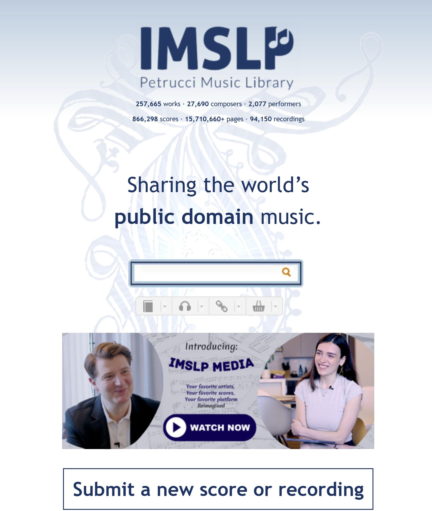
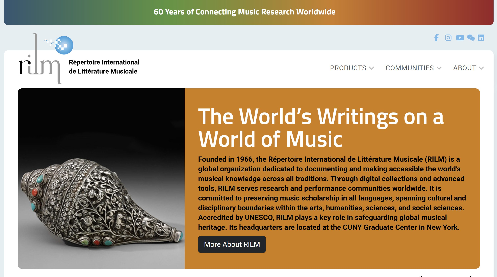
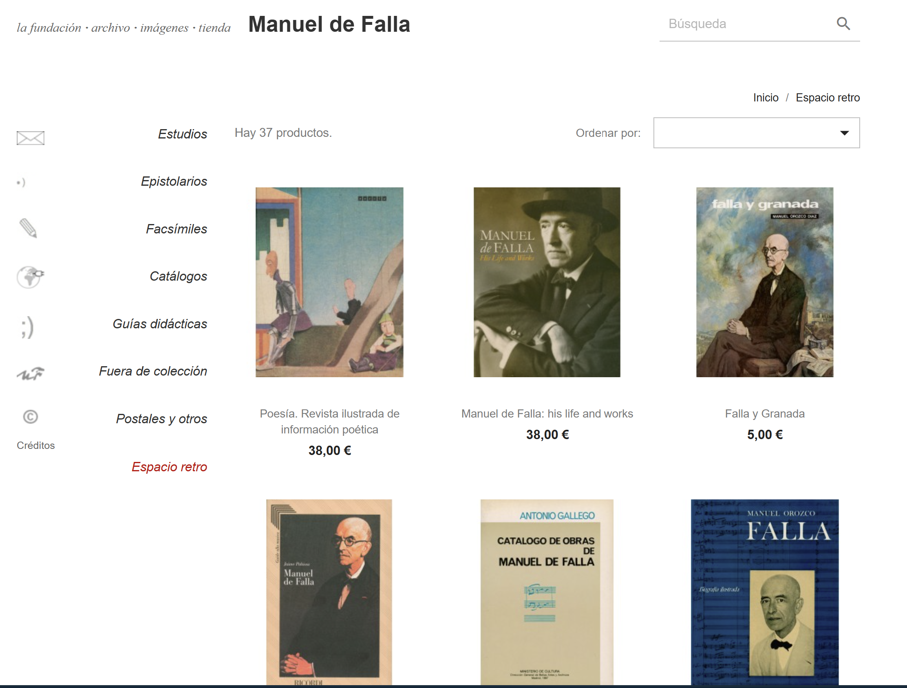
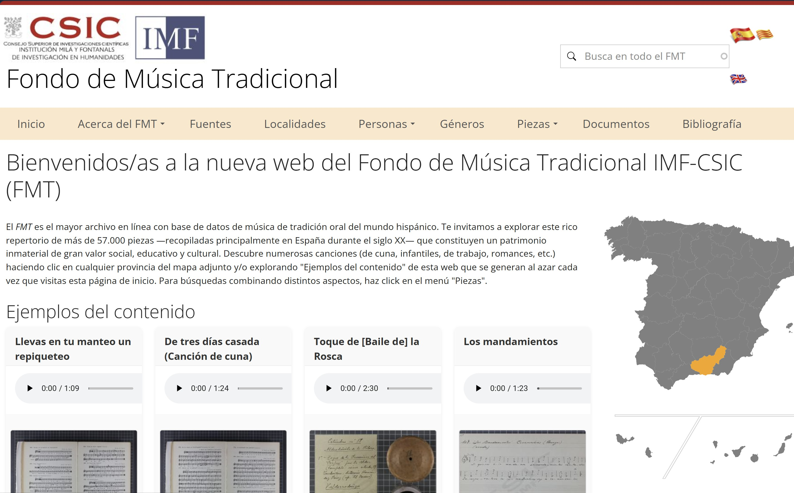
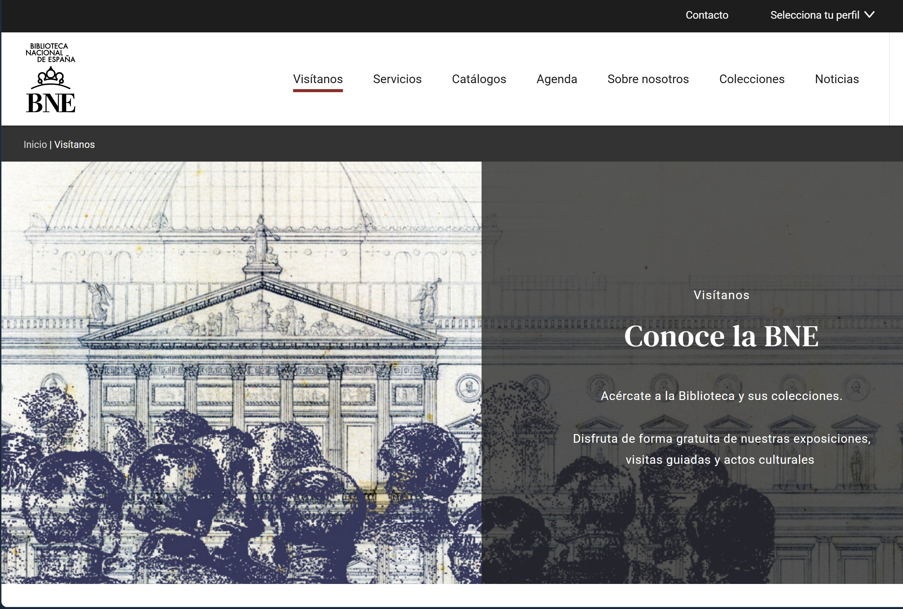

¿Hacia dónde voy?
Horizontes y Propósito
Mi objetivo no es construir tecnología abstracta, sino diseñar soluciones digitales con un propósito firme: rescatar, estructurar e impulsar la memoria en el ámbito de la gestión cultural y la archivística.
Inspiración y Cartografía Documental
Admiro profundamente aquellos ecosistemas y plataformas globales que logran equilibrar el rigor científico, el orden de grandes bases de datos y el acceso abierto. Mis líneas de investigación se inspiran en referentes como:
Estructuras Globales de Referencia
🎵 IMSLP / Petrucci Music Library: El pilar absoluto de la democratización de la música académica. Una monumental biblioteca digital que demuestra cómo la catalogación colectiva y el dominio público pueden salvaguardar millones de páginas de partituras históricas.

📚 RILM (Répertoire International de Littérature Musicale): El espejo de la excelencia en la indexación de datos. Su capacidad para estructurar, cruzar y documentar bibliografía científica musical en decenas de idiomas es una lección constante de cómo la tecnología puede organizar el conocimiento humano complejo.

Ecosistemas de Preservación Nacional
✨ Archivo Manuel de Falla: Un modelo de cómo la devoción por el legado de una figura cumbre puede traducirse en una infraestructura digital íntima, accesible y rigurosa.

🌾 Fondo de Música Tradicional IMF-CSIC: Una pieza de ingeniería archivística fundamental para mapear, etiquetar y rescatar el patrimonio inmaterial y la tradición oral de nuestros pueblos.

🏛️ Biblioteca Digital Hispánica: El gran contenedor de nuestra memoria material, una lección constante sobre cómo catalogar conjuntos monumentales de datos históricos.

Un Manifiesto Sonoro: El Archivo de La Palma
Tengo la firme intención de impulsar y dar forma a una iniciativa que late con fuerza entre la comunidad musical de nuestra isla: la creación del Archivo Digital del Patrimonio Musical de La Palma.
Este espacio no solo nacerá para salvaguardar y catalogar el fondo histórico de instituciones centenarias como la Banda Municipal de Los Llanos de Aridane, sino para unificar, proteger y proyectar hacia el futuro todo el legado sonoro, tanto material como inmaterial, que define la identidad de la isla.
Ver mis proyectos prácticos
¿Hablamos?